Note
Click here to download the full example code
4.1. Connection Pattern Generation¶
This example demonstrate how to genrate different connection pattern
for routing global signals. By default this library support basic fishbone
and HTree patterns, which can be extended to create desired connectivity
usng transformations like rotate, transalate, margin, merge,
scale and sample
Output
 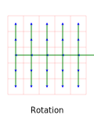
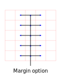
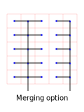
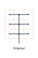
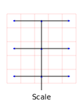
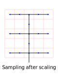
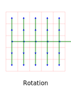
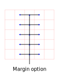
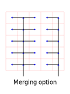
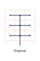
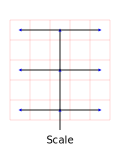
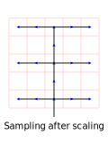
{kind=link}
{kind=link}
{kind=link}
{kind=link}
{kind=link}
{kind=link}
from spydrnet_physical.util import ConnectionPattern
p_manager = ConnectionPattern(5, 5)
fishbone_pattern = p_manager.get_fishbone().set_color("green")
svg = p_manager.render_pattern(title="Fishbone Pattern")
svg.saveas("_fishbone_pattern.svg", pretty=True, indent=4)
# ===============================
# Rotate Example
# ===============================
fishbone_pattern.rotate(90)
svg = p_manager.render_pattern(title="Rotation")
svg.saveas("_fishbone_pattern_90.svg", pretty=True, indent=4)
# ===============================
# Margin Example
# ===============================
p_manager.reset()
fishbone_pattern = p_manager.get_fishbone(x_margin=(1, 1))
svg = p_manager.render_pattern(title="Margin option")
svg.saveas("_fishbone_pattern_margin.svg", pretty=True, indent=4)
# ===============================
# Transalate and Merge Example
# ===============================
p_manager = ConnectionPattern(5, 5)
left_tree = p_manager.connections
left_tree = p_manager.get_fishbone(x_margin=(1, 1))
left_tree.translate(-1, 0)
p_manager = ConnectionPattern(5, 5)
right_tree = p_manager.connections
right_tree = p_manager.get_fishbone(x_margin=(1, 2))
right_tree.translate(2, 0)
right_tree.merge(left_tree)
svg = p_manager.render_pattern(title="Merging option")
svg.saveas("_fishbone_pattern_merging.svg", pretty=True, indent=4)
# ===============================
# Scaling Example
# ===============================
p_manager = ConnectionPattern(3, 3)
left_tree = p_manager.connections
left_tree = p_manager.get_fishbone()
svg = p_manager.render_pattern(title="Original")
svg.saveas("_fishbone_pattern_scaling1.svg", pretty=True, indent=4)
left_tree.scale(2, anchor=(1, 1))
p_manager = ConnectionPattern(5, 5)
right_tree = p_manager.connections
right_tree.merge(left_tree)
right_tree.crop_edges()
svg = p_manager.render_pattern(title="Scale and Merge")
svg.saveas("_fishbone_pattern_scaling2.svg", pretty=True, indent=4)
# ===============================
# Sampling Example
# ===============================
right_tree.sample_connections()
svg = p_manager.render_pattern(title="Scale and Sample")
svg.saveas("_fishbone_pattern_sampling.svg", pretty=True, indent=4)
Total running time of the script: ( 0 minutes 0.000 seconds)